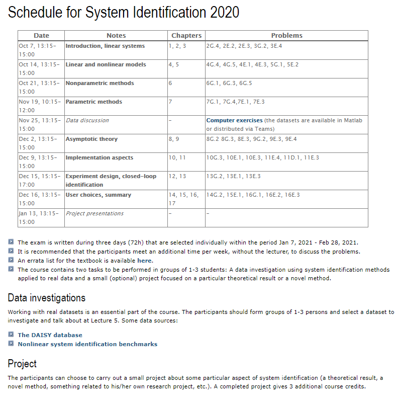

System Identification
Definition
What is System Identification? System Identification Wikipedia
Books
Lennart, Ljung. “System identification: theory for the user.” PTR Prentice Hall, Upper Saddle River, NJ 28 (1999). Errata can be found here.
Juang, Jer-Nan. Applied system identification. Prentice-Hall, Inc., 1994.
Soderstrom and P. Stoica, System Identification, Prentice Hall. 1989 (available for download from the author’s website)
Brunton, Steven L., and J. Nathan Kutz. Data-driven science and engineering: Machine learning, dynamical systems, and control. Cambridge University Press, 2022. Available here: https://www.databookuw.com/
I have created a list of system identification books via WorldCat. WorldCat allows you to search libraries across the wold. WorldCat Book List.
Researchers
Online Course
System Identification by Roy Stephen Smith from ETH Zürich. Video lectures only. At the time of writing this, a course webpage that is more current than the lectures can be found here.
System Identification and Parameter Estimation from TUDelft OpenCourseWare. Has videos.
System Identification at Linköping University. Not an online course but gives a recommended schedule of lectures and readings. To preserve this information for the future, a screenshot is below of the schedule.

Lecture notes and recordings for ECE5560: System Identification. Uses Lennart Ljung’s book.
System Identification IIT Madras, Prof. Dr. Arun K.Tangirala. Video lectures are available.
System Identification via MIT OpenCourseWare - This course uses Lennart Ljung’s Book. No videos. A syllabus (outline), calendar, lecture notes, and assignments are available.
System identification: parametric approach an approximate 27-hour (English) lecture series on system identification using parametric approaches. See the selected topics and handouts at http://jitkomut.eng.chula.ac.th/ee531… Instructor: Jitkomut Songsiri, Chulalongkorn University, Thailand
Identification, Estimation, and Learning MIT 2.160
2.160 Identification, Estimation, and Learning Youtube
2.160 Identification, Estimation, and Learning Panopto Video
https://darbelofflab.mit.edu/teaching/ Slides and Notes can be obtained from links on this page.
Videos
Technical Seminar: ‘Quest for Aircraft Stability and Control’ by Eugene Morelli. Testing of full-scale aircraft in flight to validate or improve predictions obtained through wind tunnel testing or CFD calculations is expensive and time-consuming. Being able to test aircraft stability and control using real-time onboard computations is now within reach and has far-reaching implications for efficient flight testing, control system design, aircraft health monitoring, pilot training, aircraft fleet maintenance, and safety. Aired May 18, 2007.
Introduction to System Identification. An introduction to System Identification with the System Identification Toolbox in MATLAB. Lennart Ljung is the presenter.
Linear system identification video lecture - YouTube playlist. The video course “System identification - linear theory” introduces the student to linear system identification techniques based on data-driven modeling techniques. The focus lies on experiment design, understanding and selecting model structures, and computing the best model within the model set using prediction error methods and model validation.
System Identification. Videos by Brian Douglas. Throughout the series, see the system identification workflow through several different examples that highlight the importance of data collection, model selection, model fitting, and model validation in MATLAB with the System Identification Toolbox.
Software
MathWorks System Identification Toolbox This one is written by Lenart Ljung at least initially. His book is linked above. Uses Lennart Ljung’s book.
System/Observer/Controller Identification Toolbox (SOCIT) This one is written at least initially by Jer-Nan Juang; his book is linked above. This is free but export-controlled.
SOCIT is a collection of functions, written in MATLAB language and expressed in M-files, that implements a variety of modern system identification techniques. For an open-loop system, it features functions for identification of a system model and corresponding forward and backward observers directly from input and output data. For a closed-loop system, SOCIT identifies an open-loop model, an observer, and a corresponding controller gained directly from input and output data.
System IDentification Programs for AirCraft (SIDPAC) This one is written and maintained by Gene Morelli. His book is linked above. It is free and allowed for foreign use (not export controlled).
Written in MATLAB, SIDPAC is a collection of over 300 programs that perform a wide variety of tasks related to system identification applied to aircraft. SIDPAC includes tools for experiment design, data analysis, kinematic consistency checking, static and dynamic modeling, simulation, numerical integration and differentiation, smoothing, filtering, finite Fourier transformation, statistical modeling and evaluation, optimization, parameter estimation, model accuracy quantification, model validation, and more.
Github Repositories
Mataveid System identification toolbox for GNU Octave and MATLAB was written by Daniel Mårtensson. It is mostly based on Applied System Identification.
More to come here….
Links
Database for the Identification of Systems (DaISy)
TEACHING SYSTEM IDENTIFICATION. GOALS AND FORMATS FOR DIFFERENT COURSES. Paper by Lennart Ljung